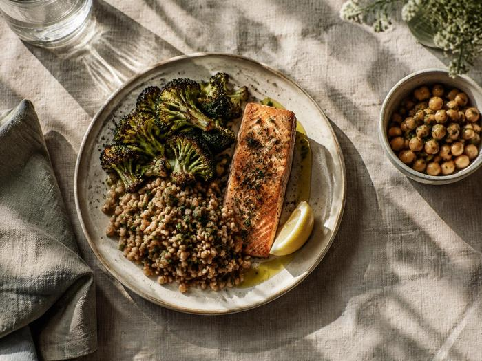

Clinical nutrition
Her public education record includes Clinical Nutrition at UW–Madison.

Amy Zellman · MS, RDN
Registered dietitian nutritionist in Madison, Wisconsin, with a clinical nutrition education and experience connected to athletes and community service.
Clinical nutrition · Athlete experience · Community involvement
A people-centered perspective
Nutrition care is strongest when it makes room for a person’s health, circumstances, and lived experience.

Amy’s public profile brings together a registered dietitian credential, a clinical nutrition education, athlete-related experience, and years of community involvement.
View education and credentials ↘Her public education record includes Clinical Nutrition at UW–Madison.
Her LinkedIn references work with athletes at her former school and a period with the Wisconsin Badgers.
Her volunteer history includes food access and eating-disorder support organizations.
About Amy
Amy Zellman, MS, RDN is listed on LinkedIn as a Madison, Wisconsin-based registered dietitian nutritionist.
A University of Wisconsin–Madison 2022 commencement listing includes Amy Zellman under Clinical Nutrition.
Public LinkedIn activity references representing athletes at her former school and reflects on eight months with the Wisconsin Badgers. Her exact role and dates are not shown in the indexed profile.
Her listed volunteer experience includes the National Eating Disorders Association chat helpline, Project HEAL at UW–Madison, food shelf volunteering, and student mentoring.
Credentials and education
Details below reflect the profile and public records available for review.
LinkedIn also lists a Dietetic Technician, Registered credential issued in 2020 and expired in 2022; it is not presented here as current.
Areas reflected in her profile
These are themes from publicly visible profile details, not a confirmed list of current services.
Amy’s credentials identify her as an MS, RDN, and a university commencement record lists Clinical Nutrition.
See education details ↘Her public LinkedIn activity mentions athlete representation at a former school and time with the Wisconsin Badgers.
View LinkedIn profile ↗Her volunteer history includes food shelf service and support for eating-disorder-related organizations.
Explore community involvement ↘Community involvement
Amy’s profile includes volunteer roles related to food access, student mentoring, and eating-disorder support.
See profile detailsLinkedIn lists volunteer chat-helpline service beginning in April 2019.
Chapter leader from January 2017 to September 2019.
Profile entries include food shelf volunteering, a B.A.S.E.S. student mentor role, and service at St. Mary’s Care Center.

Profile highlights
Available public information points to clinical nutrition education, athlete-related experience, and ongoing involvement with community organizations.
Learn more
Reference sources for the details presented on this page.
Professional snapshot
Registered dietitian nutritionist in Madison, Wisconsin.
Education
A 2022 UW–Madison commencement listing includes Amy under Clinical Nutrition. The listing does not specify degree level.
Professional profile
LinkedIn identifies Amy as a registered dietitian nutritionist and lists Madison, Wisconsin as her location.
Connect on LinkedIn ↗Stay connected
For current role, services, and contact information, use the profile link.
Connect
No direct email or personal website was visible in the public profile information reviewed. LinkedIn is the available professional contact route.
Connect on LinkedInView Amy’s profile ↗Make your own palette
For clear contrast, pair a light page with dark text or a dark page with light text.